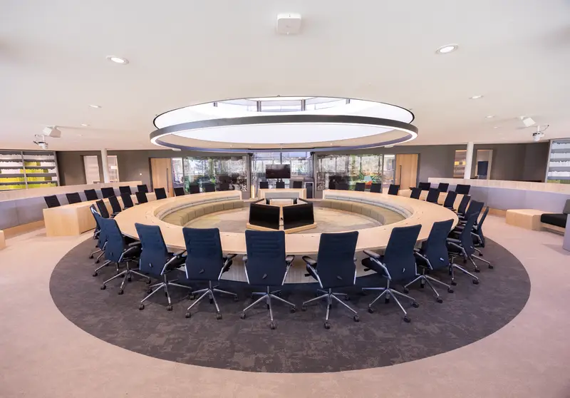
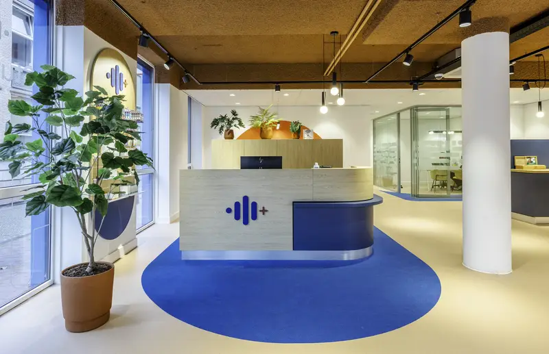
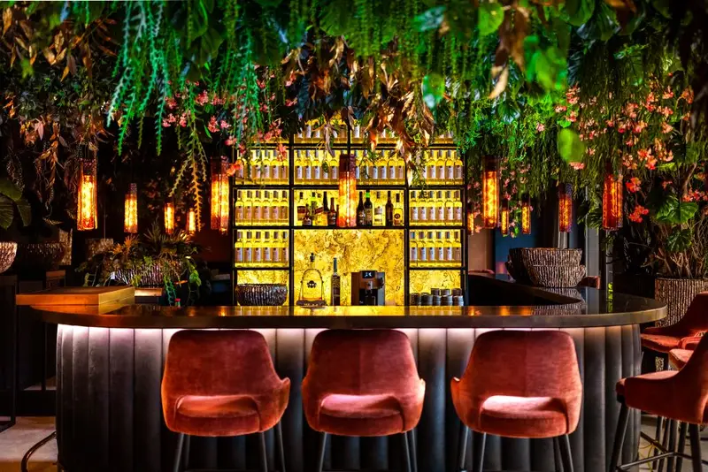
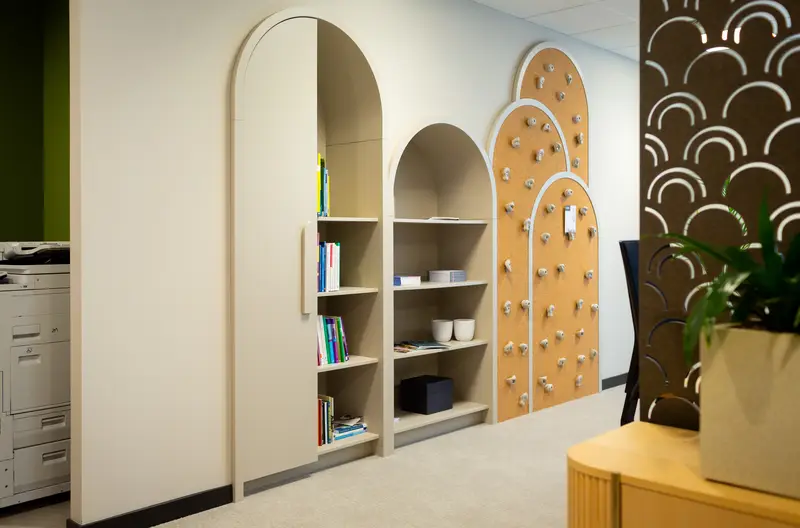
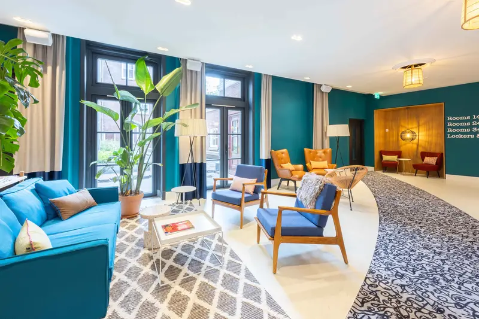

Maatwerk interieur, gemaakt in Den Bosch
Kantoren, winkels, horeca en scholen. Wij maken het interieur dat precies past bij wat jouw klant voor ogen heeft.
Voor ontwerper en eindklant
We werken voor interieurontwerpers, aannemers, projectinrichters en opdrachtgevers zelf. Zij bedenken het ontwerp, wij brengen het tot leven, tot op de centimeter.
- Maatwerk dat aansluit op het ontwerp en de wensen
- Kantoren, retail, hospitality en utiliteit
- Eén centraal aanspreekpunt, het hele proces
- Van eerste gesprek tot oplevering

Van balie tot complete winkel






Zes stappen, één aanspreekpunt
We houden jou en jouw klant op de hoogte van de voortgang, zo weten jullie altijd hoe het ervoor staat.
- 01
Kennismaking
We leren elkaar kennen en bespreken de wensen en ideeën. We nemen de tijd, zodat we precies weten wat je zoekt.
- 02
Offerte
Een duidelijke offerte: wat het kost, wat we leveren en hoe lang het ongeveer duurt. Alles netjes op een rij.
- 03
Opdrachtbevestiging
Is het akkoord, dan bevestig je de opdracht. Vanaf dat moment begint het echte werk.
- 04
Productie
In onze eigen werkplaats maken we alles precies volgens plan. Je hoort van ons hoe het ervoor staat.
- 05
Montage
Onze monteurs installeren alles netjes en efficiënt. Wat in de werkplaats is voorgebouwd, staat snel.
- 06
Evaluatie
We lopen alles samen door. Zijn er nog puntjes, dan pakken we die op.
Interieurbouw in de praktijk


Een interieur op maat?
Stuur ons het ontwerp of vertel wat je zoekt. We nemen de tijd om alles goed door te nemen.